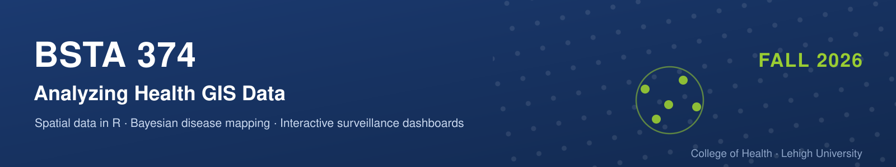

Analyzing Health GIS Data
BSTA 374 | Fall 2026 | College of Health, LEHIGH | Eric Delmelle

Session type: In Person | Off-line | Demo + Studio | Studio | Presentations | No Class
Tuesdays & Thursdays, 12:10–13:25 | Rauch Business Center 137
Where a disease occurs carries information that aggregate statistics discard. This course teaches you to map spatial health data honestly, to test whether a pattern differs from randomness, to model risk with its uncertainty, and to monitor that risk prospectively — ending in a deployed surveillance dashboard you build and defend.
Represent → Detect → Model → Monitor → Communicate
Primary text: Moraga, Geospatial Health Data (free online). Supplementary: Rogerson & Yamada, Statistical Detection and Surveillance of Geographic Clusters (R&Y, posted to Course Site).
There are no quizzes and no exams. Bring a laptop to every session.
LECTURES
August 25 Introduction to Health GIS
- Introduction to the syllabus; overview of course structure
- Introduction of each other
- Expectations re: exercises, the studio, and the final dashboard
August 27, September 1 R Review — and Your First Interactive Map
- Kinds of spatial data: Point data vs. aggregated areal data
- Disease mapping, clustering, and correlation studies
- Vectors, data frames, tibbles; reading and writing CSV files
dplyr:filter,mutate,group_by,summarise, joins- The grammar of
ggplot2: scatterplots, line graphs, facets - Simple features and the
sfpackage; shapefiles and their component files - John Snow, 1854: the first spatial epidemiology
- Your first map:
geom_sf(); colour scales and what makes one defensible - Maps in layers: points over polygons; joining a data table to a boundary file
- Software setup: R, RStudio.
- Geographic vs. projected CRS;
proj4strings and EPSG codes - Read Moraga Chapter 1
- Introduction to Exercise 1
- GITHUB Link
September 3 Thematic Cartography
- Static and interactive maps:
ggplot2,tmap,leaflet,mapview - Class intervals, color scales, and what they hide
- Worked example: SID74 sudden infant deaths, North Carolina
- In-class exercise: mapping the same rates four ways
- Read Moraga Chapter 2
- GITHUB Link
September 8 Version Control with Git & GitHub
- Repositories, commits, branches, remotes
- Why your future self needs this
- In-class exercise: create and push your course repository
September 10 Reproducible Reporting
- R Markdown: YAML, chunks and their options, figures,
knitr::kable()tables - Moving the same document to Quarto
- Publishing to GitHub Pages
- Read Moraga Chapter 11 (R Markdown only — Quarto and GitHub Pages come from posted notes)
- Introduction to Exercise 2
September 15 Point Patterns
- Complete spatial randomness as a null model
- Quadrat analysis and the variance-mean ratio
- Nearest-neighbor statistics
- Ripley’s K function; kernel density estimation and bandwidth choice
- Read posted notes; R&Y Chapter 2
September 17 Point Patterns in Space–Time
- The space-time K function; space-time interaction
- Volume rendering of space-time case data
- Positional and temporal uncertainty, and how it propagates
- Read Delmelle et al. (2014)
- In-class exercise: KDE of case locations, varying the bandwidth
- Introduction to Exercise 3 (worked on over Weeks 4–5)
September 22 Aggregated Data and Incidence Rates
- From cases to counts: aggregating points into areas
- Incidence, prevalence, and mortality rates; person-time denominators
- Crude rates; direct and indirect standardization
- Expected counts from population strata; the SIR/SMR
- Read Moraga 5.2
September 24 What Goes Wrong with Areal Data
- Rate instability and the small-numbers problem
- Why the extreme values on a raw SIR map are usually the small areas
- MAUP: scale and zoning effects
- The misaligned data problem; the ecological fallacy
- In-class exercise: map raw SIRs, then map their population size — compare
- Read Moraga 5.5
September 29 Spatial Weights and Moran’s I
- Defining neighbors: contiguity (rook, queen), distance bands, k nearest
- Row-standardized weights and why the choice matters
- Moran’s I: definition, expectation under the null, interpretation
- Inference by permutation vs. the normal approximation
- Read Moraga 5.1; R&Y Chapter 3
October 1 Reading and Using Global Statistics
- The Moran scatterplot and its four quadrants
- Join-count statistics for binary outcomes; Geary’s C
- What a significant Moran’s I does not tell you
- In-class exercise: building and reading a Moran scatterplot
- Preview: what if we recompute Moran’s I every month? — see November 24
- Introduction to Exercise 4
October 6 Local Spatial Statistics
- From global to local: decomposing Moran’s I
- Local indicators of spatial association (LISA)
- Cluster types: high-high, low-low, and the spatial outliers
- Read R&Y Chapter 4
October 8 Hotspots and Multiple Testing
- Getis-Ord Gi* and hotspot mapping
- Multiple testing and false discovery rate
- Reading a LISA cluster map honestly
- In-class exercise: building a LISA cluster map
- Introduction to Exercise 5
October 13 Cluster Detection
- The Kulldorff spatial scan statistic
- Likelihood ratios, scanning windows, and Monte Carlo inference
- Read R&Y Chapter 5
October 15 SaTScan in Practice
- Spatial, temporal, and space-time scans
- Poisson vs. Bernoulli models; choosing the maximum window
- In-class exercise: running and interpreting a space-time scan
- Introduction to Exercise 6
October 20 Bayesian Inference
- Likelihood, priors, hyperpriors, posteriors
- Hierarchical models and shrinkage; why smoothing helps with small numbers
- MCMC and why we are not using it: cost and convergence
- Read Moraga 3.1
October 22 INLA and the R-INLA Package
- Latent Gaussian models; what INLA approximates and why it is fast
inla(): formula,f()random effects,family,control.compute(DIC, WAIC)- Priors, including penalized complexity (PC) priors
- Worked example: mortality across 12 hospitals — posterior summaries, credible intervals, and exceedance probabilities
- Read Moraga 3.2 and Chapter 4
- Studio rubric and dataset proposal instructions distributed
October 27 Bayesian Disease Mapping
- Poisson model for counts; the BYM model and the CAR/ICAR prior
- BYM2: interpretable precision and mixing parameters, PC priors
- Case study: lip cancer in Scottish males, 1975–1980 (
SpatialEpi,poly2nb(),nb2INLA()) - Mapping relative risks and exceedance probabilities
- Read Moraga 5.3 and Chapter 6
October 29 Spatio-temporal Disease Mapping
- Bernardinelli parametric trend: area-specific time slopes
- Non-parametric alternatives (RW1, RW2); the four space-time interaction types
- Case study: lung cancer in Ohio, 1968–1988; animated maps with
gganimateandplotly - This is the same Ohio dataset the Chapter 15 upload app displays — the model you fit here is the one your dashboard shows
- Read Moraga 5.4 and Chapter 7
- Introduction to Exercise 8
THE STUDIO
Weeks 11–15 are a studio. Each Tuesday opens with a short demonstration; Thursdays are working time. You drive your own build, use the documentation, and bring specific problems to class. Milestones are demonstrated live in class — a milestone is a working increment of your app, not a write-up about it.
November 3 Demo: from R Markdown to flexdashboard
- Column layout,
###panels,data-width - Embedding
leafletmaps,DTtables,ggplot2charts - Worked example: global PM2.5 air pollution
- Read Moraga Chapter 12
November 5 Studio — M1: static dashboard
- Working studio time. Bring specific problems.
- M1 demonstrated in class: a
flexdashboardthat loads your data and displays at least one map and one time series
November 10 Demo: Introduction to Shiny
ui/serverstructure;shinyApp()- Inputs (
selectInput,sliderInput,fileInput) andrender*()outputs - How reactivity actually flows — and common mistakes
runtime: shinyin a dashboard YAML header- Read Moraga Chapters 13–14
November 12 Studio — M2: reactive app
- Working studio time. Bring specific problems.
- M2 demonstrated in class: the user selects a region and a time period, and the maps and summaries respond
November 17 Demo: Uploading Spatio-temporal Data
- Reading an uploaded CSV plus a full shapefile (
.shp,.dbf,.shx,.prj) dygraphstime series +leafletchoropleth, driven by variable and year dropdowns- Handling missing inputs — where student apps break
- Read Moraga Chapter 15 (the closest thing to your project)
November 19 Studio — M3: spatio-temporal handling
- Working studio time.
- M3 demonstrated in class: the app steps through spatio-temporal data and displays modeled rates with their uncertainty
November 24 Prospective Surveillance — M4: monitoring panel
- Retrospective analysis vs. prospective monitoring: why repeated testing changes the problem
- Statistical process control and the CUSUM chart: the cumulative sum, the reference value k, the decision interval h, average run length
- Monitoring Moran’s I or an SMR over time (as previewed on October 1)
- Other routes: exceedance probabilities, space-time scans on recent periods, period-over-period comparison
- Flagging rules: thresholds, false alarms, and detection speed
- SpatialEpiApp: R-INLA risk estimates and SaTScan clusters behind a point-and-click interface — the reference implementation
- Deployment and documentation
- CUSUM is covered properly here; using it in your app is optional — M4 accepts any defensible monitoring display
- Read R&Y Chapters 7–8; Moraga Chapter 16
- M4 demonstrated in class
November 26 Thanksgiving Recess — No Class
December 1, 3 Final Dashboard Presentations
- Ten-minute live demonstration of your dashboard — drive the app, do not present slides
- Introduce the data and the health question in under two minutes
- Show the monitoring panel doing something: a flag raised, or correctly not raised, and why that is the right behavior at your threshold
- State one thing you would fix or add with another two weeks
- Expect to be asked how any part of it works
- Course wrap-up and reflections on December 3
No Final Exam Assessment is complete at the end of Week 15
| last updated August 26 2026 | erd424@lehigh.edu